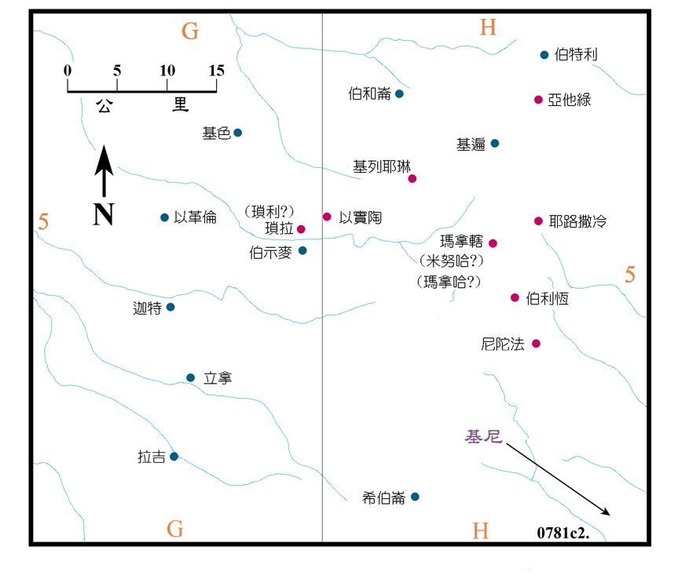

本段中所述的迦勒，是犹大的后裔、希斯仑之子、耶拉篾之弟，他的地业分散在尼陀法、亚他绿和琐拉之间，均在希伯仑以北20公里以上。另外在代上 6:55 中的迦勒，他是耶孚尼的儿子，分得了希伯仑城外属城的郊野。在民 14:6 中，他是当年摩西派出的十二个探子之一，在书 15:13 中，他分得希伯仑和底壁地区为业。这两个同名为迦勒的人，唯一相同的是他们的女儿都名叫押撒，所以有学者认为两者实为一人，究竟如何，有待考证。